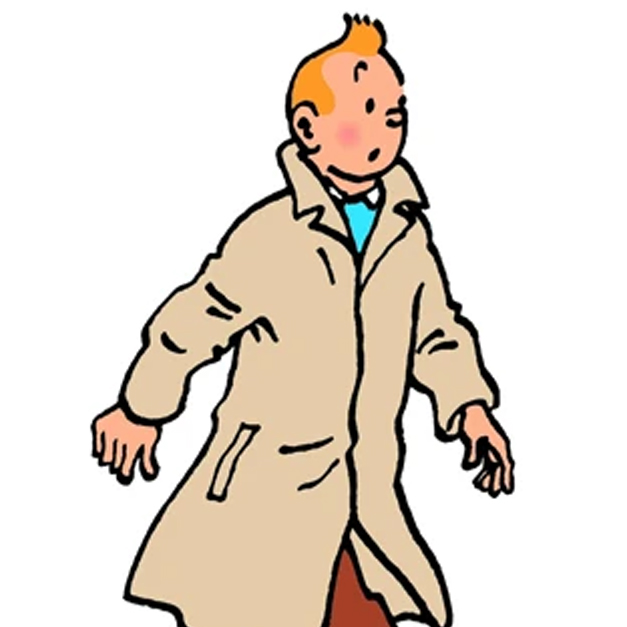

Dan Katz
Leg. psykolog och leg. psykoterapeut.
03 Signatärer
Signatärerna förenar vetenskaplig tyngd med erfarenhet av offentlighet, beslut och folkbildning.
Till startsidanProfiler
Vi ställer upp på vetenskapskriteriets sju principer.
Leg. psykolog och leg. psykoterapeut.

Epidemiolog och vetenskaplig rådgivare med tre decennier inom folkhälsa och evidensbaserad policy.
Professor i teknikhistoria och prisbelönt folkbildare i frågor om innovation, risk och samhällsansvar.
Molekylärbiolog och akademiledamot med lång erfarenhet av forskningsetik och öppen vetenskap.
Fysiker, adjungerad professor i teoretisk elektroteknik vid Uppsala Universitet.

Fil. kand, kulturvetare, techentreprenör och initiativtagare till Vetenskapskriteriet.
lotten@vetenskapskriteriet.se

Civilekonom, system- och AI-arkitekt, Microsoft Alumni.

Datorprogrammerare och initiativtagare till Vetenskapskriteriet.
anders@vetenskapskriteriet.se
I dialog med samhället